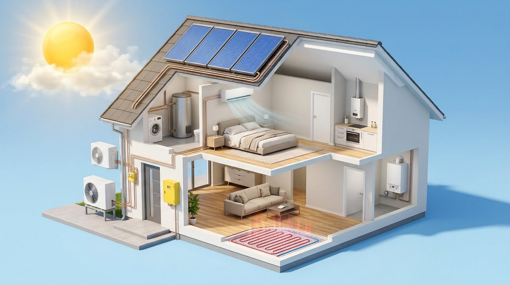

Instalação, manutenção e reparação para o conforto da sua casa.
Prestamos assistência técnica a caldeiras, esquentadores, termocumuladores, sistemas de ar condicionado, equipamentos solares e bombas de calor, bem como intervenções em instalações de gás e chão radiante. Analisamos cada pedido para propor uma solução adequada ao equipamento, às necessidades de utilização e às condições do imóvel.
Desde o diagnóstico de uma avaria à instalação de um novo sistema, explicamos os trabalhos propostos e confirmamos o âmbito e as condições da intervenção antes de avançar.
Explore as soluções para o conforto da sua casa
Selecione um equipamento na casa ou nos botões para conhecer o serviço.

Aquecimento
Caldeiras
Diagnóstico, manutenção e instalação de caldeiras, com avaliação do equipamento e das condições da intervenção.
Ilustração conceptual. O tipo de sistema e o âmbito da intervenção são confirmados após avaliação.
Todos os serviços
Assistência multimarca a caldeiras
Reparação, manutenção e instalação de caldeiras a gás e a gasóleo. Avaliamos avarias, problemas de aquecimento e falhas no fornecimento de água quente, procurando a solução mais adequada ao seu equipamento.
Prestamos serviços de reparação e instalação de termocumuladores. Avaliamos problemas no aquecimento da água, fugas e funcionamento irregular, propondo uma intervenção adequada ao equipamento e às condições da instalação.
O seu esquentador não aquece, desliga-se ou apresenta um funcionamento irregular? Prestamos assistência técnica, instalação e manutenção de equipamentos de várias marcas.
Soluções de climatização para habitações e espaços profissionais. Apoiamos a escolha do equipamento e realizamos serviços de instalação, manutenção e assistência técnica.
Intervenções em instalações individuais e coletivas, com avaliação técnica e atenção à segurança. Prestamos apoio a particulares e condomínios na identificação e resolução de anomalias.
Avaliamos as suas necessidades e ajudamos a escolher uma solução solar adequada à utilização prevista e às condições do imóvel. Prestamos serviços de instalação e assistência técnica.